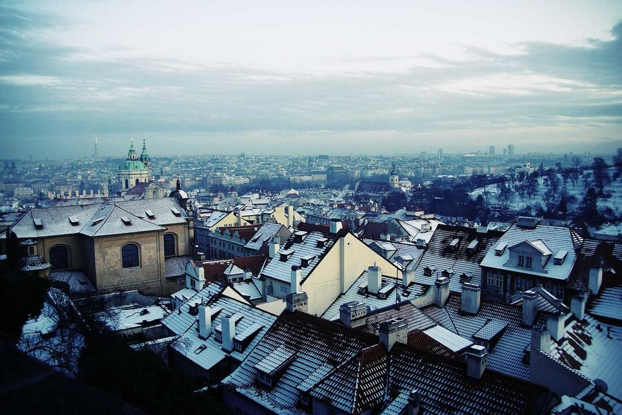

Пещера Ласко, Франция, ~17 000 лет до н.э.
40 000 – 3 000 до н.э.
Первобытное искусство
Наскальные рисунки, Venus-фигурки, дольмены — первые шаги человека к самовыражению. В пещерах Альтамиры и Ласко древние художники изображали бизонов и оленей с поразительной точностью, используя природные пигменты. Искусство здесь — магия, молитва и охота одновременно.
40 000лет назад
350+пещер с росписью